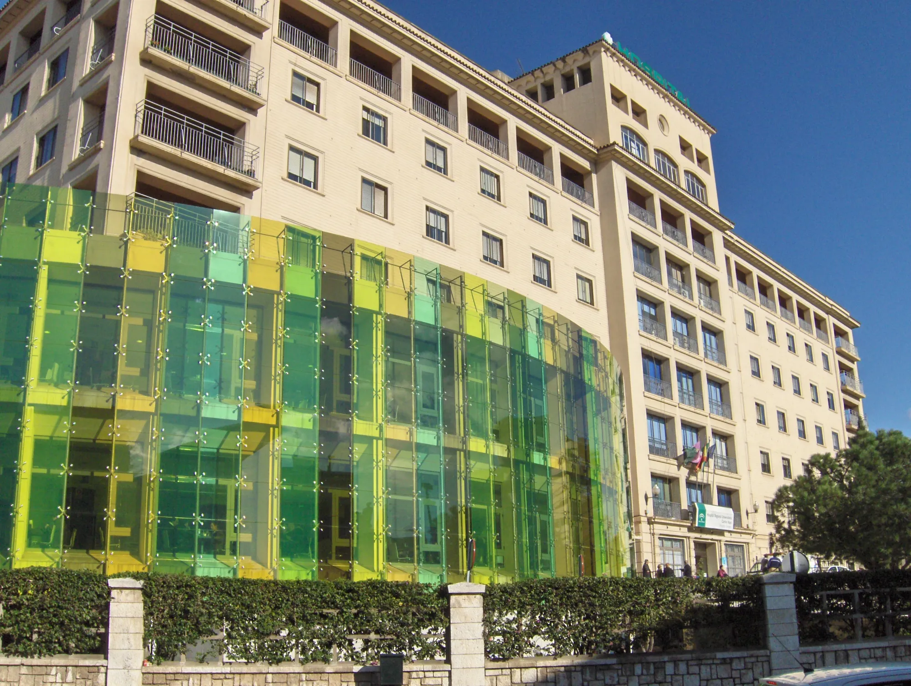
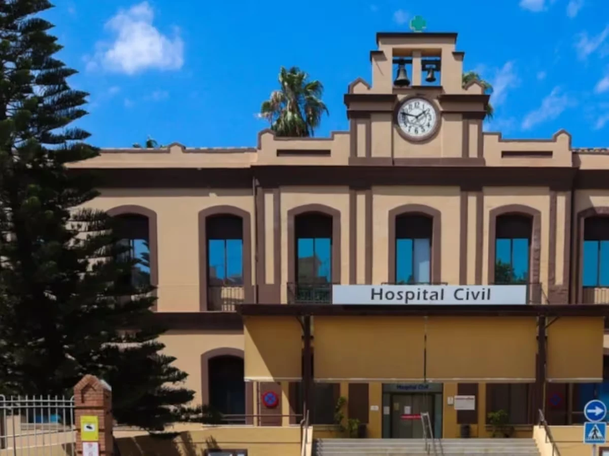

Sector sanitario
Especialistas en instalaciones sanitarias
Profesionalidad en espacios donde la actividad no se detiene
Nuestra experiencia en hospitales, centros de salud y otras instalaciones sanitarias nos permite afrontar cada proyecto con profesionalidad, compromiso y atención al detalle.
Hemos trabajado en centros de referencia de Málaga y la Costa del Sol, entre ellos el Hospital Regional Universitario de Málaga (Carlos Haya), el Hospital Civil de Málaga y el Hospital Costa del Sol de Marbella.
Nuestro objetivo es ofrecer soluciones de calidad, adaptadas a las necesidades de cada instalación y a las exigencias propias del entorno sanitario.
Centros en los que hemos trabajado
Hospitales y centros sanitarios de referencia en Málaga y la Costa del Sol que han confiado en nuestro trabajo.
-

MálagaHospital Regional Universitario de Málaga
Carlos Haya
Pintura interior y exterior, rehabilitación y aplicación de pinturas técnicas en uno de los grandes hospitales de referencia de Málaga.
-

MálagaHospital Civil de Málaga
Málaga capital
Trabajos de pintura, rehabilitación y pinturas técnicas en uno de los centros sanitarios más emblemáticos de la ciudad.
-
 Marbella
Marbella
Hospital Costa del Sol
Marbella
Intervenciones de pintura interior y exterior, rehabilitación y pinturas técnicas en el hospital de referencia de la Costa del Sol.
-
Málaga y provincia
Otros hospitales y centros de salud
Instalaciones sanitarias de Málaga
Además, hemos trabajado en otros hospitales, centros de salud e instalaciones sanitarias de la provincia de Málaga.
Servicios para el sector sanitario
Los mismos trabajos que hemos realizado en hospitales, a disposición de cualquier centro sanitario.
Pintura interior
Habitaciones, consultas, pasillos y zonas comunes con acabados limpios y duraderos.
Fachadas y exteriores
Pintura y protección de fachadas y elementos exteriores del edificio.
Rehabilitación y reparación
Reparación de paramentos, grietas y humedades antes de cada acabado.
Pinturas técnicas
Pinturas antibacterianas, epoxi y lavables para zonas con exigencias especiales de higiene.